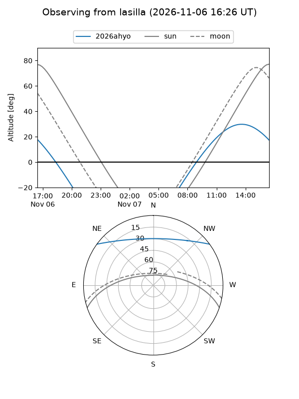
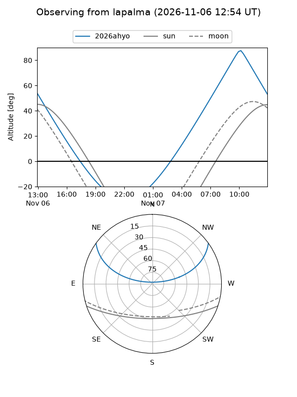
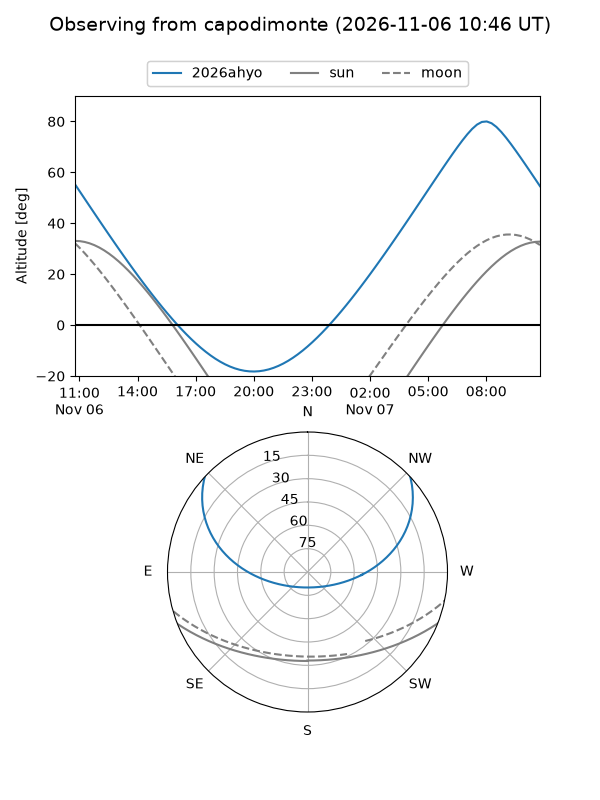
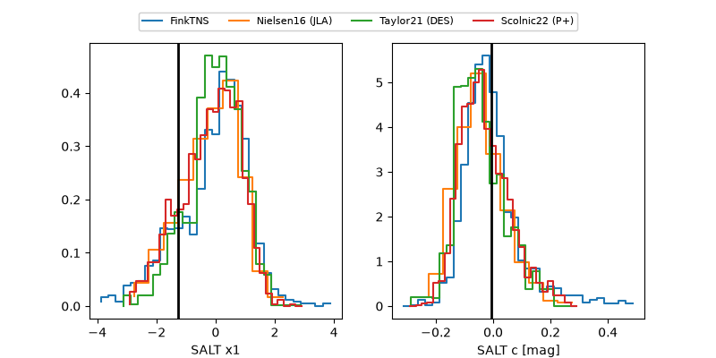

2026ahyo
Target 2026ahyo at 2026-11-06 21:34
Aliases and brokers:
FINK-ZTF: ztf.fink-portal.org/ZTF26acdjvue
Lasair-ZTF: lasair-ztf.lsst.ac.uk/objects/ZTF26acdjvue
ALeRCE-ZTF: alerce.online/object/ZTF26acdjvue
YSE-PZ: ziggy.ucolick.org/yse/transient_detail/2026ahyo
TNS name: wis-tns.org/object/2026ahyo
Direct TNS query: direct search
alt names
ZTF26acdjvue (ztf,fink_ztf)
2026ahyo (tns,yse)
Coordinates:
equatorial (ra, dec) = 179.7051,+31.05286
equatorial (HMS+DMS) = 11:58:49.23,+31:03:10.30
galactic (l, b) = (190.9510,+77.86332)
Flags:
peak dt: +1.1
Photometry:
last ztfr=19.27
3 ztfr detections
Lightcurve
Visibility



Additional plots
